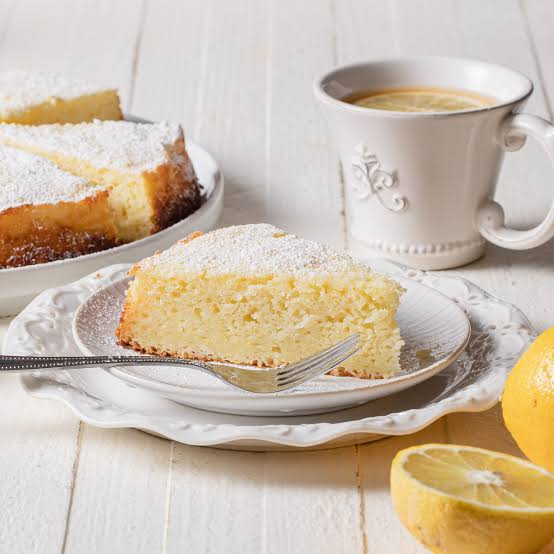

Ricotta cake

Description
The Essence of Traditional Italian Ricotta Cake
Ricotta cake is a timeless Italian classic celebrated for its incredibly moist, tender crumb and delicate sweetness. Unlike heavy butter cakes, the star ingredient here is creamy ricotta cheese, which infuses the batter with a uniquely soft, melt-in-your-mouth texture that stays fresh for days.
Enhanced with a vibrant touch of fresh lemon zest, this rustic cake strikes the perfect balance between simple home-style baking and a refined, elegant treat. It is a staple in Italian households, traditionally enjoyed alongside a morning espresso or as a comforting afternoon snack.
A Versatile and Wholesome Treat
What makes this ricotta cake truly exceptional is its wonderful simplicity and lighter profile, substituting heavy fats with a subtle touch of sunflower oil. It provides a beautifully golden crust and a fluffy interior that requires no complicated frosting or filling to shine—a simple dusting of powdered sugar is all it takes.
Whether you are hosting a casual gathering with friends or preparing a weekend treat for the family, this easy-to-make recipe is a foolproof crowd-pleaser that showcases the beauty of traditional baking.
Ingredients
- 250g cow's milk ricotta cheese (ricotta vaccina)
- 220g all-purpose flour (farina 00)
- 3 medium eggs (approx. 165g)
- 150g sugar
- 50g sunflower oil
- 16g baking powder
- Zest of 1 lemon
- Butter (for greasing the pan) as needed
Steps
- Preheat your oven to 180°C (350°F) and grease a cake pan with a little bit of butter and a dust of flour.
- In a large bowl, whisk the eggs and sugar together until the mixture becomes pale, light, and fluffy.
- Drain any excess liquid from the ricotta, then add it to the bowl along with the sunflower oil and fresh lemon zest, mixing well until completely smooth.
- Sift the all-purpose flour and baking powder into the wet mixture, folding gently with a spatula just until combined.
- Pour the smooth batter into your prepared cake pan and level the top with your spatula.
- Bake for approximately 35-40 minutes, or until the top is beautifully golden and a toothpick inserted into the center comes out clean.
- Let the cake cool completely before removing it from the pan, and dust with powdered sugar before serving.
Home